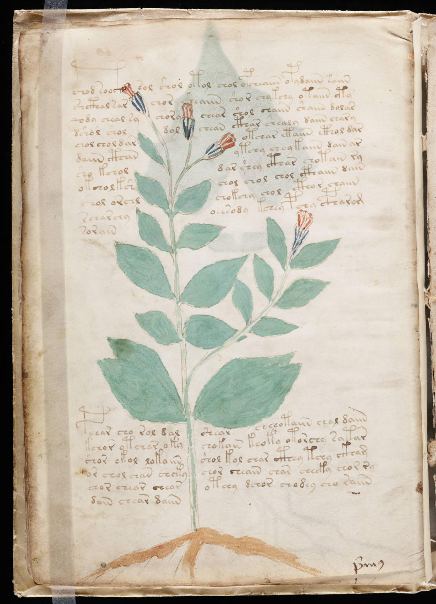

f8v
1cthod soocthsol shol otol chol opcheaiin opydaiin saiin2shcthal sarchor sheaiin shor chykchy otaiin cty3qody cheal sychorychear shol chaiin shaiin dolar4dshol sholdolchean cthar shealy daiin chary5chol chol darotchar etaiin cthol dar6daiin cthanytchy chey kaiin dain ar7sho kcholdar shey cthar chotain ry8okchol kshchol chol chol cthaiin dain9shol orchlchokchy chol cthor chaiin10scharchyoeesody kchey pchy cpharom11sorain12pchar cho rol dalshear cheeotaiin chal daiin13kchor otchar okychokain keoky otorchy satar14shor okol lokaiinshol kol char cthey tchy ckham15or chol cheen chckychor cheain char cheeky chor ry16chor chear chearoteey dchor chodey cho raiin17dain chear daiin
